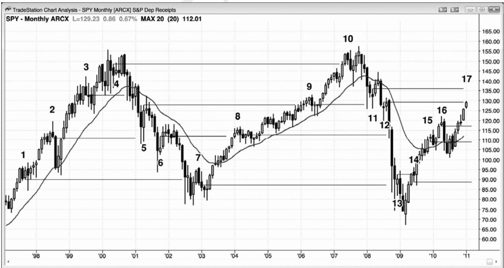

第9章 反转经常在前一失败反转的信号棒处结束¶
第 9 章 反转经常在前一失败反转的信号棒处结束
失败的早期反转的入场价位，常常成为后来的成功反转的一个磁力位。举例说明，如果出现一轮空头趋势，在市场继续下跌的过程中出现几个失败的多头入场，那么一旦市场最后成功向上反转，那么之前的每个入场价位和每条信号棒的高点都将成为市场运动的目标。在出现明显的回撤之前，市场常常会一路返回到最高的信号棒高点。很可能是一些在那些较高信号入场交易者，在市场向不利于他们的方向运动时逐步加仓，然后他们把自己的初始入场作为最后的利润目标，最坏的一笔交易在盈亏平衡点离场，所有在较低价位入场的交易都有所获利。可能是聪明的交易者们认为就是这样，在那些目标处抛售他们的多头头寸，或者只是很多伟大的交易者们知道的很多秘密握手之一，仅仅因为他们知道那是一个可靠的重现形态，回撤将在先前的入场点附近结束，所以他们就在那里离场。对于交易者们来说，也可能是类似于“感谢上帝，我再也不会这样做了！”的价位。他们没有退出亏损交易，当他们一直希望市场向他们的入场点折返时，他们的亏损越来越大。当市场最后到达那些价位时，他们离场，发誓再也不会犯同样的错误。
对于交易中发生的每件事情，差不多都有一个数学基础，特别是因为有如此多的成交量是由基于统计分析的软件算法产生的。在空头趋势向上反转的例子里，那个最早的买进信号常常出现在空头通道的起点。当空头通道开始时，等距运动的方向概率至少为 60%。也就是说，市场在上涨 10 个跳动前，大约有 60%的几率下跌 10 个跳动。可能是以近期波段为基础的合理范围内的任意规模的运动，但关键是市场拥有下跌的偏向。随着市场下跌，动能降低，大约下降一半时，方向概率又降至 50%左右，但是在市场形成交易区间之前，这一中性区域的价格通常是不得而知的。随着市场继续下跌至某个重要磁力位，方向概率在中性位置过冲，实际上转变为偏向于多头。在交易区间的中点，存在不确定性；但是，一旦市场击中底部，交易者们便一致同意市场走得太远了。在这一点，方向概率偏向于多头。然后市场会反弹，开始形成一个交易区间。在交易区间的底部，方向概率总是偏向于多头，那个底部将会位于某个重要的技术价位。当市场正在下跌时，有很多价位可供选择，而且大多数不会引出清晰的买进架构。有些公司会以一个或多个技术支撑位为基础编写程序，而有些公司则会使用其他支撑位。当足够多的关键技术价位靠得很近时，将会出现足够大的预期市场反转的成交量，从而改变市场运动的方向。在那一点，交易数学是站在你那边的，因为你正在即将成为交易区间底部的价位买进。没有人事先确切地知道反转点在哪里，但反转将会表现为某种类型的反转形态；重要的是当市场位于关键技术价位时关注这些形态，测量运动目标、趋势线、甚至更高时间框架上的均线和趋势线，都是关键技术价位。这些问题将在第三本书中关于反转的一章中进一步讨论。通常没有必要观察大量的图表去寻找架构，因为只要你耐心、机警、并且知道形态，那么每张图上都会出现合理的架构。
一旦市场向上反转，它通常会努力形态一个交易区间，交易区间在初期的第一个可能的顶部是早先那些多头入场价位。市场将努力上涨至那些买进信号棒的顶部。随着市场上涨，方向概率降至 50%，当市场靠近区间顶部时，方向概率进一步下降。由于事先没有人知道顶部在哪里，而且方向概率为 50%的交易区间中点，也没有人会事先知道，所以市场会出现过冲，直到击中某个技术价位，在那里交易者们认为市场是明显过度了。这常常是在先前那些买进信号处。记住，当价格上次到达那里时，方向概率偏向于空头，当它再次到达那里里，通常会再次偏向于空头；那就是市场一般会再次向下反转的原因。那是一个卖家掌控的价位。随着交易区间的发展，上涨运动常常与先前那些入场棒中的一条形成一个双重顶，然后市场向下反转，至少是暂时反转。在市场探寻不确定性（即方向概率为 50%的中性区）的过程中，市场常常会上涨和下跌。在某个点处，市场会决定这个区域对于多空双方来说都不再有价值，对一方来说，它不是一个好的价位。然后，市场将会再次做趋势运动，直到它找到一个价位，多空双方都把它看作建仓的良好价位为止。

P103
SPY（一只类似于电子迷你的交易所交易基金）的月线图上出现一轮很强的多头趋势，结
束于 2000 年，但是在市场继续上涨的过程中，出现几次反转进入空头趋势的尝试（见图 9.1）。
每个空头信号棒低点（棒 1、2 和 3）都是下跌途中出现调整的目标。
类似地，结束于 2003 年那轮空头趋势，一路上出现几次失败的多头反转尝试（棒 4、5和 6），每条多头信号棒的高点都是随后出现的任意反弹的目标。
另外，从 2003 年开始的反弹包含几次失败的空头尝试（棒 7、8、9 和 10），每一个都是结束于 2009 年初的那轮空头趋势中的一个目标。在那次下跌过程中，市场几次尝试筑底，每条买进信号棒（棒 11、12 和 13）的高点都是现在上涨过程中的一个目标。最后，截止棒 17的上涨过程中市场几次尝试形成顶部（棒14、15和16），每条卖出信号棒的底部都是任意下跌过程的磁力位。
没有哪个目标会是必须到达的，但每个目标都是很强的磁力位，常常把市场拉回它所在的位置。